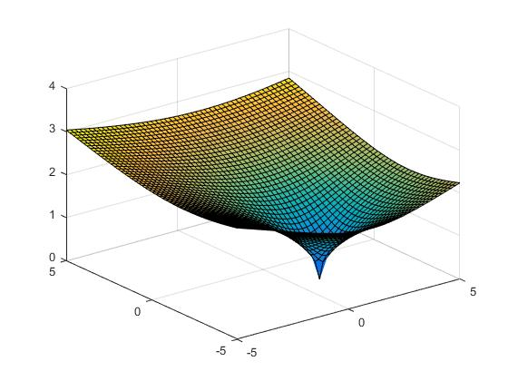
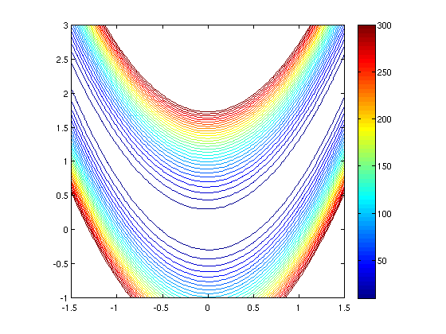

Research Interests

Problem classes: My
main research interests revolve around the development of solution
algorithms for nonconvex nonsmooth optimization problems. Specific
classes of such problems of particular interest include bilevel
optimization and mathematical programs with equilibrium or variational
inequality constraints. Bilevel programs are optimization problems
with a hierarchical structure involving two levels of decision making,
respectively controlled by a leader and a follower. They represent a
very powerful tool for modelling a large number of real-world
problems, including problems from data science, economics, and
engineering. These problems are however very difficult to solve, and
most attempts have been limited to the case where reactions of the
follower to choices by the leader are predictable. With my
collaborators, I am currently developing numerical algorithms that can
deal with more realistic situations where the follower has a freedom
of choice while reacting to decisions by the leader.

Numerical techniques:
For optimization problems involving nonconvex and nonsmooth
functions, solutions methods should take these specific features into
account to work efficiently. Because of the nonconvexity, detecting
global optimal solutions becomes quite difficult. Hence, to be able to
solve problems of reasonable size, my work involves the development of
algorithms that can generate stationary points which in turn have the
potential to be locally optimal. Particular numerical techniques of
interest include Newton-, (augmented) Lagrangian-, and smoothing-type
methods. The latter class of techniques can sometimes be very
efficient in dealing with problems involving nonsmooth functions. Over
the last few years, I have also developed a great amount of interest
in variational analysis, which can provide some handy tools for
mathematically characterizing optimal solutions of nonconvex and
nonsmooth optimization problems.
Areas of real world applications:
Application areas of current interest include data science, network
pricing, and electricity markets. In data science, a standard tool to
proceed with model selection tasks is grid search, which performs very
well on training problems involving just a small number of
hyperparameters. I am working on designing numerical methods which
have the potential to perform significantly better than grid search or
other related techniques for training problems with multiple
hyparameters. A related ongoing project is being funded by
Decision Analysis Services Ltd with Anthony Dunn working as PhD
student (2018-2022) and Nick Barton as MSc student (2017-2018). On
network pricing, I am currently collaborating with the Streets
Analysis Team at Transport for London (TfL) within the PhD project of
Laura Murray (2016-2019) and TfL will be sponsoring a MSc project on
the subject in 2018-2019.